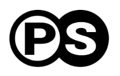

My Experiences
Here are some of the roles I've had:
- Machine Learning Intern at Procurement Sciences
- I'm helping to grow a seed-stage AI startup by working with experienced professionals such as John Knapp and Dr. Alex Wissner-Gross to build efficient and performant chat interfaces and document/web/API parsers.
- AI Lead (SIG AI) at ACM at UC Merced
- I hosted workshops, projects, and hackathons to help club members understand, replicate, and use state-of-the-art AI and ML models and products.
-
For the above-mentioned events and projects, I partnered with
the Data-Centric AI (DCAI) community, Weights and Biases,
shadows under my mentorship, and more. Previous guest hosts
include:
- Charles Frye, a Core Educator for the Full Stack Deep Learning course
- Fabiana Clemente, Chief Data & Product Officer at YData
- Andrea Parker, a Machine Learning Engineer at Weights and Biases
- Tony A. Liu, Cofounder at JARA
